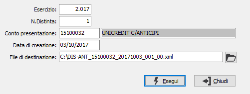

Elaborazione flusso XML - Home Banking
La procedura effettua la creazione del flusso XML del messaggio logico di richiesta anticipo fattura Italia (CBIInvFinReqLogMsg) secondo gli standard CBI versione 00.01.02.
Per la creazione del flusso sono trattate esclusivamente le distinte stampate in definitivo con divisa di gestione Euro. All’interno di tali distinte sono considerate solo le rate di clienti con codice ISO della nazione indicata in anagrafica uguale a “IT” o “SM”.
Saranno creati tanti file XML per quanti sono le rate presenti in distinta; questo comportamento si è reso necessario dato che i campi del flusso numero documento, data emissione fattura e codifica fiscale del cliente rappresentano la chiave univoca per individuare la richiesta di anticipo all'interno della distinta (qui intesa come flusso XML). Quindi ipotizzando una distinta con la presenza di una fattura di un singolo cliente di 2 rate da 5000,00 € avrò come risultato due file XML per ciascuna rata.
La struttura del nome del file generato è la seguente: DIS-ANT_CodiceContoAnticipi_aaaammgg_NumeroDistinta_NumeroRata.xml.
